Touch
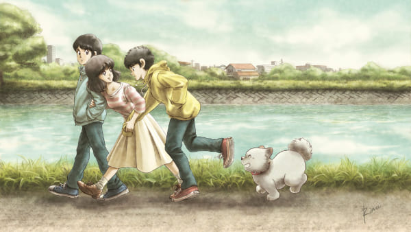Touch esse ta bem mais fresco na minha Memória terminei essa semana e ja virou um dos meu favoritos , não e muito conhecido mas recomendo pra quem gosta de anime de esporte , Kazuya é um pitcher ás do time de sua escola. Minami e Kazuya são aceitos por todos como um casal que se encaixa perfeitamente. Tatsuya, por outro lado, é um preguiçoso, embora possa ter mais talento do que seu irmão, ele está disposto a permanecer nas sombras por causa dele.
📀 episódios:101
📆 ano:1985-1987
🏢 estúdio:Group TAC

Uesugi Tatsuya , mais do que qualquer que vive ou ja viveu ama Asakura Minami
- tatsuya
Kaze ga Tsuyoku Fuiteiru

Kaze ga Tsuyoku Fuiteiru Nunca imaginei que um simples anime de corrida ia me motivar tanto , esse anime conta a história de como dez universitários com experiências, objetivos, e lugares na vida bem diferentes, treinam, se classificam e correm em uma tradicional maratona de revezamento no Japão, e o que isso significou para as vidas deles. recomendo
📀 episódios:23
📆 ano:2018-2019
🏢 estúdio:Production I.G
As Montanhas Hakone são as mais íngremes do mundo.
-haiji
Mob Psycho 100
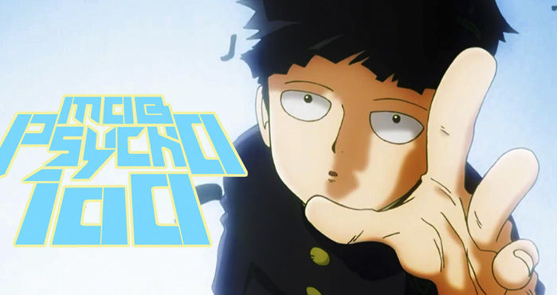Mob Psycho 100 do mesmo cridar de one punch man ,Kageyama Shigeo ou Mob é um garoto que não leva muito jeito pra se expressar, mas que é um poderoso telepata. Decidido a levar uma vida normal, Mob suprime seus poderes extrasensoriais, mas quando suas emoções atingem um pico de 100%, algo terrível lhe acontece! impossivel não gostar.
📀 episódios:37
📆 ano:2016-2022
🏢 estúdio:Bones
O Verdadeiro encanto é a Gentileza, vire alguém gente boa so isso.
- reigen
Hajime no Ippo
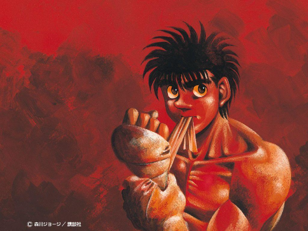Hajime no Ippo , se esta procurando um anime para se arrepiar com cada luta você achou.Ippo Makunouchi tem 16 anos, mas nunca faz coisas da sua idade. Seus dias consistem em ajudar sua mãe na loja de aluguel de barcos de pescaria e estudar. Certo dia, Ippo apanha de uns garotos que o cercam a caminho de casa, mas é salvo por um grande lutador de Boxe. e decide entrar no mundo do boxe
📀 episódios:126 + 2 especiais
📆 ano:2000-2014(não finalizado)
🏢 estúdio:madhouse
Corra até não conseguir mais correr e depois volte a correr. O esforço constante é o maior atalho da vida.
- kamogawa
One Piece
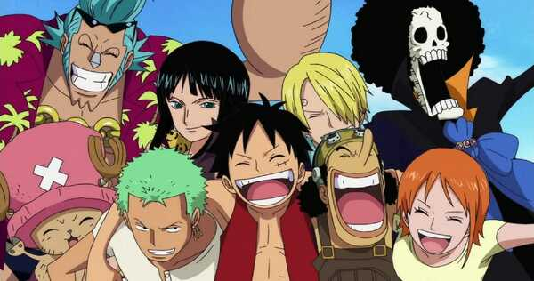One Piece, o Meu favorito, muitos tem preguiça por conta dos numéros de episodios, confia em mim vale a pena. One Piece é um anime que conta a história do jovem Monkey D. Luffy, que ganhou poderes de borracha depois de comer uma fruta do diabo. O enredo mostra as aventuras de Luffy e seu grupo, Os Piratas de Chapéu de Palha, em busca do One Piece, o tesouro mais procurado do mundo.
📀 episódios: +1000
📆 ano: 1999-Presente
🏢 estúdio: Toei Animation
Conhecendo tanto a derrota quanto a vitória, andando por aí derramando lágrimas, é assim que você se torna um verdadeiro homem.
- shanks
Shigatsu Wa Kime no Uso
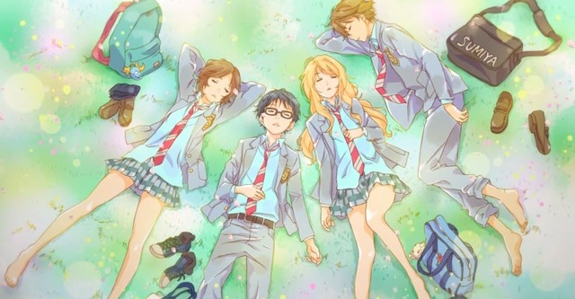Shigatsu é aquele tipo de anime que você não da nada para ele no começo e depois vira um dos melhores que ja viu ,Miyazono Kaori é uma violinista linda com um espirito livre, o qual se vê na sua forma de tocar. Kaori acaba por tentar ajudar Kousei a voltar ao mundo da musica, mostrando-lhe que essa deve ser muito mais livre e aberto do que o modo estruturado e rígido que Kousei estava habituado.
📀 episódios: 22
📆 ano: 2014-2015
🏢 estúdio: A-1 Pictures
Mesmo nas profundezas dos oceanos mais escuros sempre passa alguma luz
-Kousei
3-gatsu no Lion
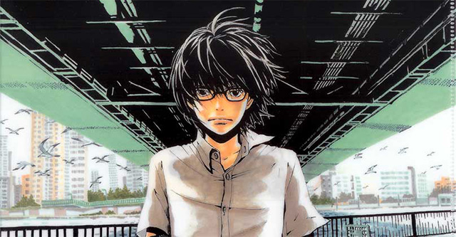3-gatsu no Lion ,tudo ganha temporada nova parece que so coisa boa que não. Rei é um adolescente de 17 anos que perdeu a família biológica quando ainda era criança e hoje mora sozinho, longe dos pais adotivos. Apesar de ser muito jovem, ele se tornou jogador profissional de shôgui, uma espécie de jogo de tabuleiro conhecido como o "xadrez japonês".
📀 episódios: 44
📆 ano: 2016-2018
🏢 estúdio: shaft
Este tempo é precioso, mas está andando para a frente e eu não consigo pará-lo.
-hinata
Hunter x Hunter

Hunter x Hunter, esse e bem famoso e interminavél. Gon é um menino de 12 anos que deseja se tornar um Hunter para encontrar seu pai, o lendário Hunter Ging Freecss. Depois de ter vivido muito tempo na floresta, enquanto ele era mais jovem, acabou se tornando muito bom em lidar com animais. Também, possui sentidos extraordinários de olfato e visão.
📀 episódios: 148
📆 ano: 2011-2014 (não finalizado)
🏢 estúdio: madhouse
Rei das formigas. Você acha que se eu não tenho mãos, eu não posso orar? A oração é conduzida pelo coração!
-Netero
Steins;Gate
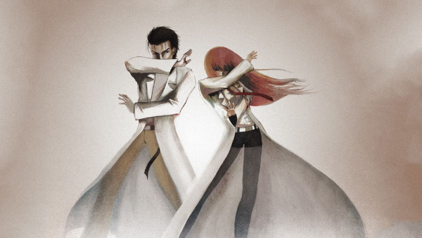Steins;Gate, um dos poucos animes de viagem no tempo que eu gosto.Steins;Gate se passa no Verão de 2010, aproximadamente um ano após os acontecimentos que tiveram lugar em Chaos;Head, em Akihabara. Steins;Gate é sobre um grupo de amigos que personalizaram seus microondas num dispositivo que pode enviar mensagens de texto para o passado.
📀 episódios: 24
📆 ano: 2011
🏢 estúdio: white fox
Não importa a linha de mundo, a época ou o lugar. Eu sempre vou te amar.
-Okabe
Fullmetal Alchemist: Brotherhood
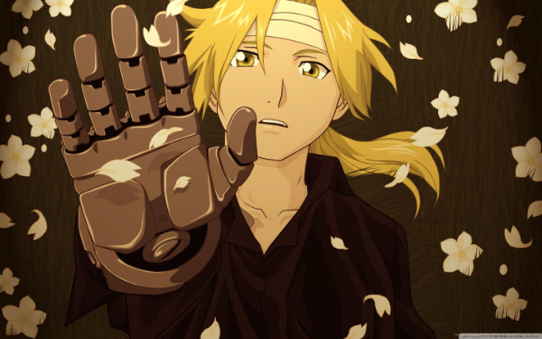Fullmetal Alchemist: Brotherhood, esse anime é sencacional praticamente perfeito.Os irmãos e alquimistas Edward e Alphonso Elric desafiaram muitas leis quando resolveram fazer uma transmutação humana para trazer sua mãe de volta à vida. Muitas consequências vieram disso e os irmãos tiveram que perder partes do seus próprios corpos para conseguir o que queriam.
📀 episódios: 64
📆 ano: 2009-2010
🏢 estúdio: Bones
Levante a cabeça e prossiga com sua vida. Você têm suas próprias pernas para poder andar, então use-as
-Edward
Dragon Ball Z
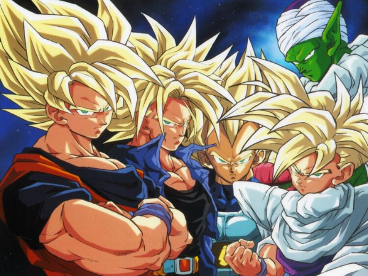Dragon Ball Z, foi o meu primeiro anime , ele que me fez ver mais dessas obras. Son Goku, guerreiro que descobre ser parte de um legado de poderosos conquistadores alienígenas - e passa a defender seu planeta adotivo, a Terra, de outros seres igualmente superfortes e capazes de feitos descomunais.
📀 episódios: 291
📆 ano: 1989-1996
🏢 estúdio: Toei Animation
Os limites só existem se você os deixar existir
-Goku
Cowboy Bebop
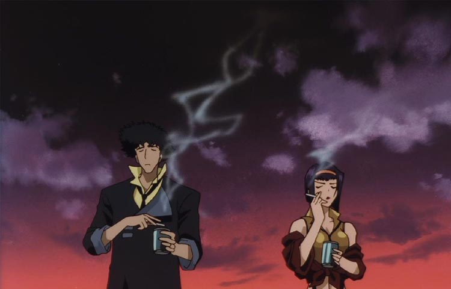Cowboy Bebop, conta a história de caçadores de recompensa que integram a tripulação da nave Bebop. O ex-gângster Spike Spiegel trabalha junto ao amigo e ex-policial Jet Black para capturar criminosos em todos os cantos da galáxia. Além deles, a misteriosa e habilidosa Faye Valentine e a hacker Ed fazem parte da equipe.
📀 episódios: 26
📆 ano: 1998-1999
🏢 estúdio: Sunrise
Olhe estes olhos. Um deles é falso, porque eu o perdi em um acidente. Desde então, tenho visto o passado em um olho, e o presente no outro. E tenho acreditado que aquilo que eu tenho visto não é toda a realidade
-spike
Major
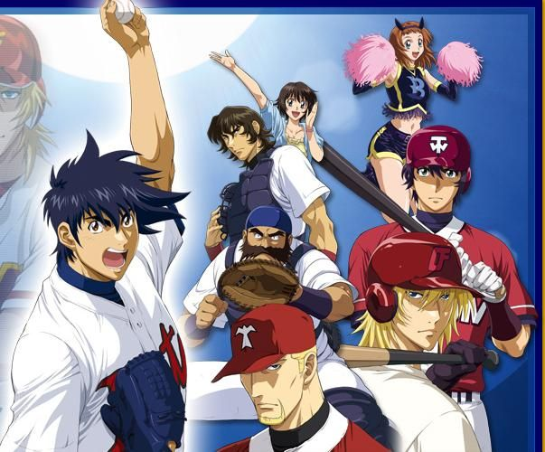Major, esse foi o primeira obra de beisebol que vi, o que me faz gostar mesmo foi que a gente acompanha o goro da infancia até o profissional achei isso muito foda
📀 episódios: 154 +2 especiais
📆 ano: 2004-2010
🏢 estúdio: Studio hibari( 1, 2 ,3 temporada) SynergySP(4 ate o final)
não soltarei sua mão ate que possa pegar a bola sozinha
-goro
Monster
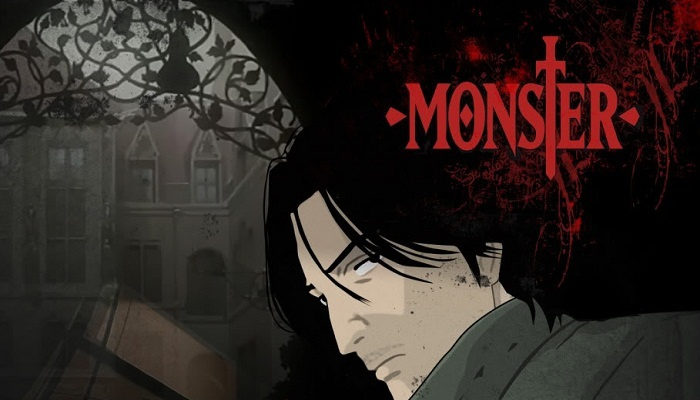Monster, mesmo eu achando um anime que não e tudo isso que falam, não deixa de ser uma obra incrivél com um vilão espetacular. Um neurocirurgião brilhante mergulha em uma jornada sombria ao tentar resolver uma série de assassinatos envolvendo um paciente que ele salvou.
📀 episódios: 74
📆 ano: 2004-2005
🏢 estúdio: madhouse
No fim, você só pode confiar em si mesmo.
-Grimmer
Vinland Saga
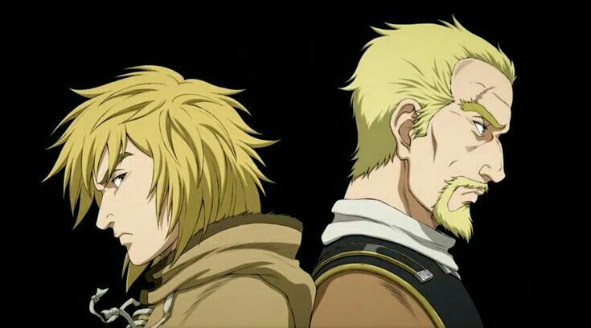Vinland Saga, acredito que seja o melhor dessa geração no caso o anime , pois o mangá ja e mais antigo,O jovem Thorfinn prepara a vingança ao juntar-se ao bando de mercenários do assassino do seu pai, Askeladd, enquanto este mergulha em conspirações políticas.
📀 episódios: 48
📆 ano: 2019-2023(ainda não finalizado)
🏢 estúdio: wit ( 1° temporada) mappa (2° temporada)
eu não tenho inimigos
-Thorffin
Rainbow: Nisha Rokubou no Shichinin
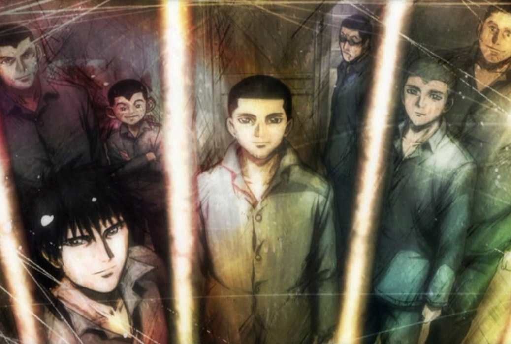Rainbow, anime de descraçado esse né ,mas vale muito a pena,o ano é 1955, pós segunda guerra-mundial, e você acompanhará a história de 6 garotos que acabaram de serem jogados em uma “escola” disciplinar e precisarão agora sobreviver por 2 anos dentro deste ambiente infernal violento, triste e escuro. Todos jogados lá por crimes leves, justificáveis ou não.
📀 episódios: 26
📆 ano: 2010 ( não finalizado)
🏢 estúdio: Madhouse
Meu coração não pode mais doer. Meu corpo não pode ser profanado mais do que já está.
-joe
Gintama
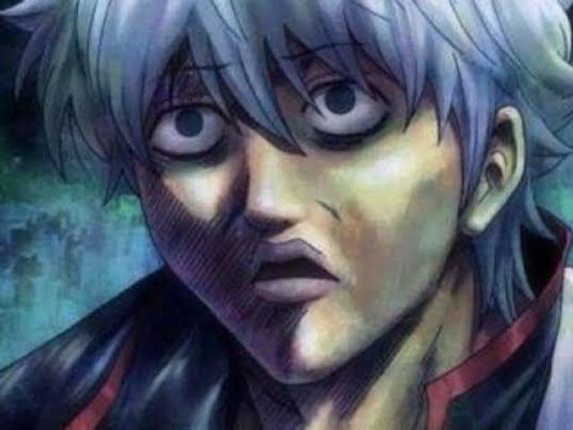Gintama, esse eu ainda não terminei mas ja vi boa parte. acho que não e uma comedia que funcione com todo mundo, mas comigo funciona.O samurai Sakata Gintoki, vivendo em um mundo tomado por seres de outro planeta, ajuda o adolescente Shimura Shinpachi a salvar sua irmã de um grupo de alienígenas que quer levá-la para um bordel, explorando-a como trabalhadora. Eventualmente, Shimura se torna aprendiz de Gintoki e eles criam uma grande amizade, além de viverem grandes aventuras juntos de uma alienígena chamada kagura.
📀 episódios: 367 + 2 filmes +1 especial
📆 ano: 2006-2021
🏢 estúdio: Sunrise
Há duas coisas que as pessoas temem… são a morte e o constrangimento. Aqueles que tentam vencer a morte são apenas idiotas, mas não vou rir daqueles que tentam superar seu constrangimento. Eu gosto desse tipo de idiotas
-Gintoki
Koe no Katachi
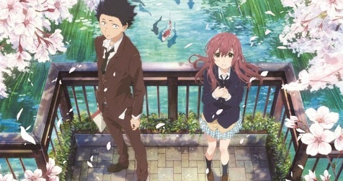Koe no Katachi, esse filme e lindo tanto na animação , direção e história.Uma estudante com problemas de audição sofre com o bullying dos colegas e decide mudar de escola. Anos mais tarde, um dos rapazes que a importunavam resolve se redimir.
📀 duração: 2h 10 min
📆 ano: 2016
🏢 estúdio: Kyoto Animation
Quero que você me ajude a viver.
-Ishida
grand blue
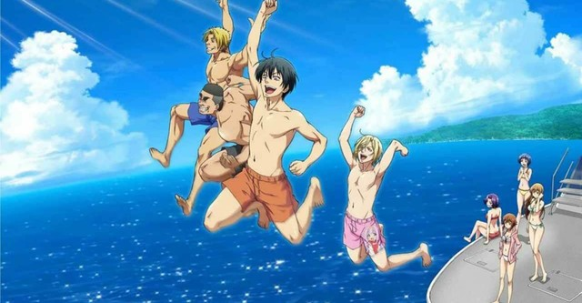Grand blue, Uma nova vida começa para Kitahara Iori, que acaba de ingressar na faculdade, perto do mar na cidade de Izu. Emocionado por um novo começo, ele se muda para casa do seu tio, uma loja de mergulho chamada "Grand Blue". Lá, ele encontra um lindo oceano, belas mulheres e homens que gostam de mergulho e álcool....Será Iori capaz de viver sua tão sonhada vida universitária?
📀 episódios: 12
📆 ano: 2018 (não finalizado)
🏢 estúdio: zero-g
Ser aceito por quem você é, mesmo que você seja um pouco louco sobre isso... isso é a vardadeira felicidade.
-kaya mizuki
Ping Pong the Animation
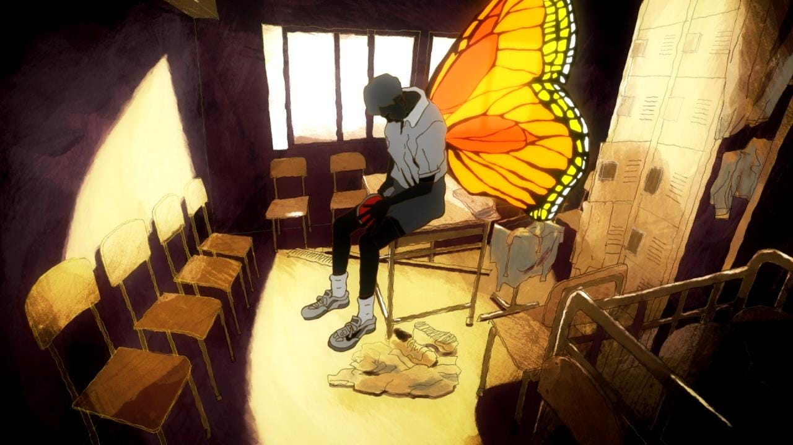Ping Pong the Animation, A história é sobre o estudante do ensino médio Yukata Hoshino, apelidado de Peco. Ele e seu amigo de infância, Makoto Tsukimoto, apelidado de Smile, fazem parte do clube de tênis de mesa local e ambos têm um talento natural para o esporte, embora a personalidade tranquila de Smile o impeça de vencer seu amigo Peco.
📀 episódios: 11
📆 ano: 2014
🏢 estúdio: Tatsunoko Productiong
Os vencedores escrevem a história e os perdedores são a história... Já vi essa mentalidade destruir muitas pessoas.
-Obaba
O Castelo no Céu
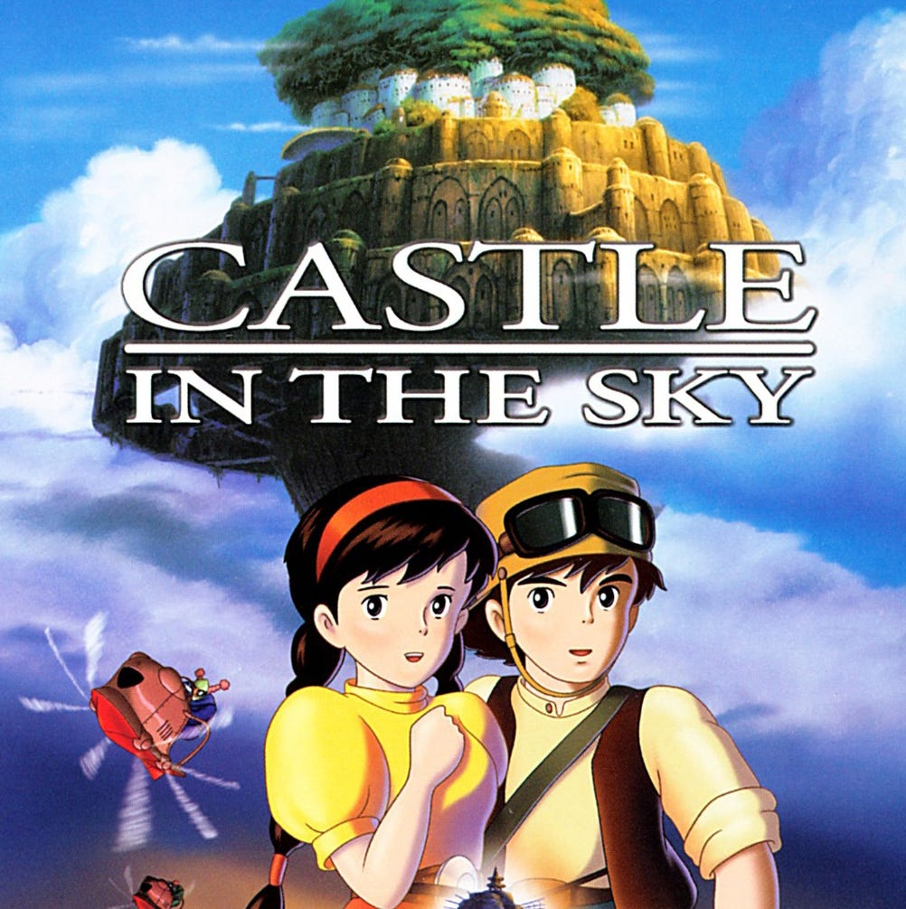O Castelo no Céu, A história é sobre Sheeta, uma jovem órfã que possui um colar misterioso se une ao mineiro Pazu para procurar uma lendária cidade flutuante. Mas a dupla é perseguida por gananciosos piratas aéreos.
📀 Duração: 2h 4 min
📆 ano: 1986
🏢 estúdio: Studio Ghibli
Não importa quantas armas você tem. Não importa o quão boa sua tecnologia pode ser. O mundo não pode viver sem o amor
-Sheeta
Odd Taxi
Odd Taxi, Situado em um universo de animais antropomórficos, Odd Taxi segue a história de Odokawa, um morsa taxista de 41 anos cujos pais o abandonaram na escola primária. Ele costuma conversar com outros passageiros animais que andam em seu táxi em suas respectivas viagens pela cidade de Tóquio, onde se passa a série.
📀 episódios: 13
📆 ano: 2021
🏢 estúdio: OLM, P.I.C.S.
Por que você queria atenção? É porque você queria a aprovação dos outros, certo? E por que você queria a aprovação dos outros? Porque você tem baixa auto-estima. Porque você não tem confiança, você não pode aprovar a si mesmo
-Dobu